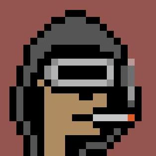

Soy un estudiante de ingeniería de sistemas, actualmente cursando el 7mo semestre.

Soy un estudiante apasionado por la tecnologia, actualmente estoy estudiando en la Universidad de Santander, en el programa de ingenieria de sistemas. Me gusta aprender cosas nuevas y enfrentar retos que me permitan crecer como profesional y como persona.
Me gusta mucho la música, de cualquier tipo menos vallenato, soy un fanatico de las carreas de cualquier tipo, especialmente la Formula 1 y me gusta mucho la comida italiana .